Data Visualization
Basics of Data Visualization
Why Visualizations Matter
- The first thing we want to do in statistics is visualize our data. Always!
- There are a multitude of measures to describe our data, why do we need graphs ?
- Data with the same summary statistics can be very different!
Dinosaur Dozen
Consider the dinosaur dozen dataset, which contains 12 different datasets all with the same summary statistics.
| dataset | mean_x | mean_y | std_dev_x | std_dev_y | corr_x_y |
|---|---|---|---|---|---|
| bullseye | 54.26873 | 47.83082 | 16.76924 | 26.93573 | -0.0685864 |
| circle | 54.26732 | 47.83772 | 16.76001 | 26.93004 | -0.0683434 |
| dino | 54.26327 | 47.83225 | 16.76514 | 26.93540 | -0.0644719 |
| dots | 54.26030 | 47.83983 | 16.76774 | 26.93019 | -0.0603414 |
| h_lines | 54.26144 | 47.83025 | 16.76590 | 26.93988 | -0.0617148 |
| high_lines | 54.26881 | 47.83545 | 16.76670 | 26.94000 | -0.0685042 |
| slant_down | 54.26785 | 47.83590 | 16.76676 | 26.93610 | -0.0689797 |
| slant_up | 54.26588 | 47.83150 | 16.76885 | 26.93861 | -0.0686092 |
| star | 54.26734 | 47.83955 | 16.76896 | 26.93027 | -0.0629611 |
| v_lines | 54.26993 | 47.83699 | 16.76996 | 26.93768 | -0.0694456 |
| wide_lines | 54.26692 | 47.83160 | 16.77000 | 26.93790 | -0.0665752 |
| x_shape | 54.26015 | 47.83972 | 16.76996 | 26.93000 | -0.0655833 |
Why Visualizations Matter Cont.
Dinosaur Dozen Cont.
However, the datasets clearly have different relationships, which become apparent once we graph them!
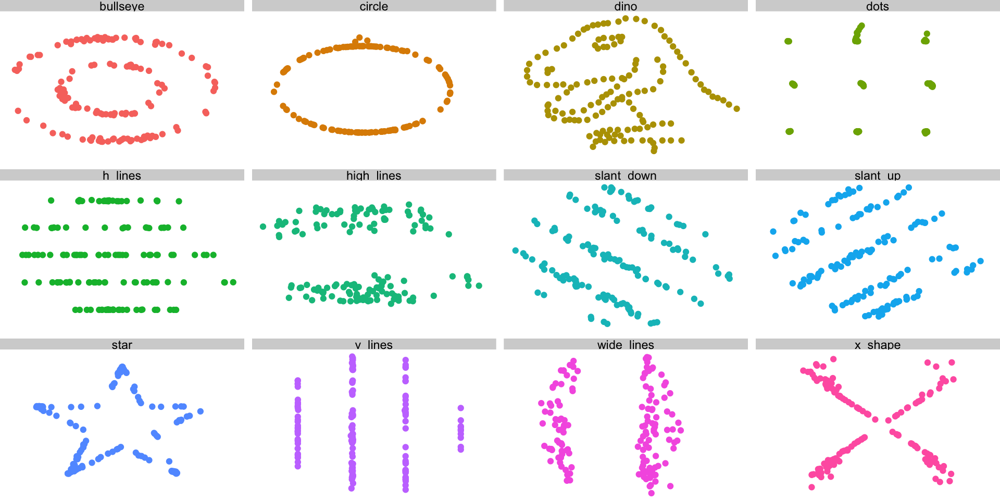
Why Visualizations Matter Cont.
- While visualization in very important, it should also rarely be used alone.
Warning
Images are merely illusions intended to represent the data. However, they aren’t fully the things they represent and can be misinterpreted.
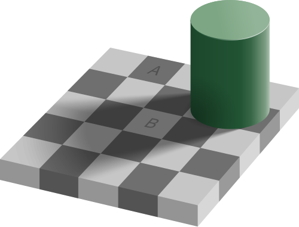
Why Visualizations Matter Cont.
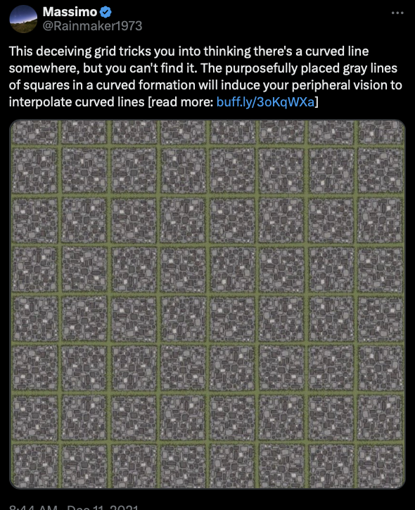
- While we often think of optical illusions as silly images, in statistics it can represent trying to draw incorrect conclusions from graphics
- This is common with those that have worked hard on research and want to see results
Consideration while Visualizing Data: Overplotting
- Visualizing your data can be fun! we will learn all type of ways to make graphs and customization options
- However, over-plotting is very common and can obscure the intention of the graph
- Edward Tufte coined the terms:
- Data ink: ink used in a visualization necessary to convey meaning
- Data-ink ratio: ratio of data-ink to non-data ink
Consideration while Visualizing Data: Overplotting Cont.
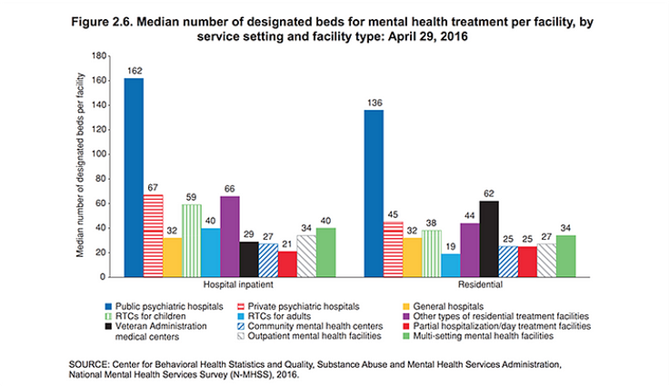
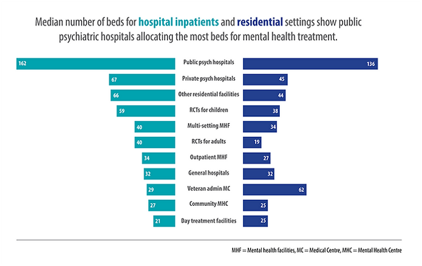
Consideration while Visualizing Data: Overplotting Cont.
Tip
You will know every aspect of your data and want to share it. However, most of the time, only basic visualizations is needed to convey the message i.e no one likes a confusing graph!
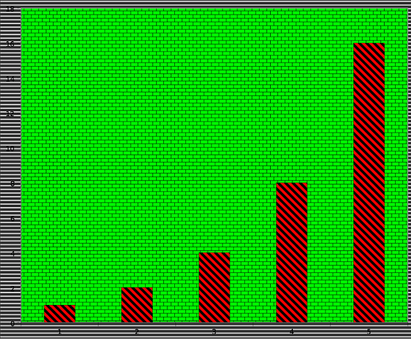
Consideration while Visualizing Data: Color Usage
- Unless you are color blind, most do not consider how others perceive color in graphs
- Around 1% of females are color blind, but around 10% of males are at least partially color blind source:https://en.wikipedia.org/wiki/Color_blindness
- Color consideration goes past color blindess:
- Using similar colors for different categories can infer they are actually the same
- Using green and red may infer positive/negative or good/bad
- While becoming less popular, people still print graphics, and often in black and white
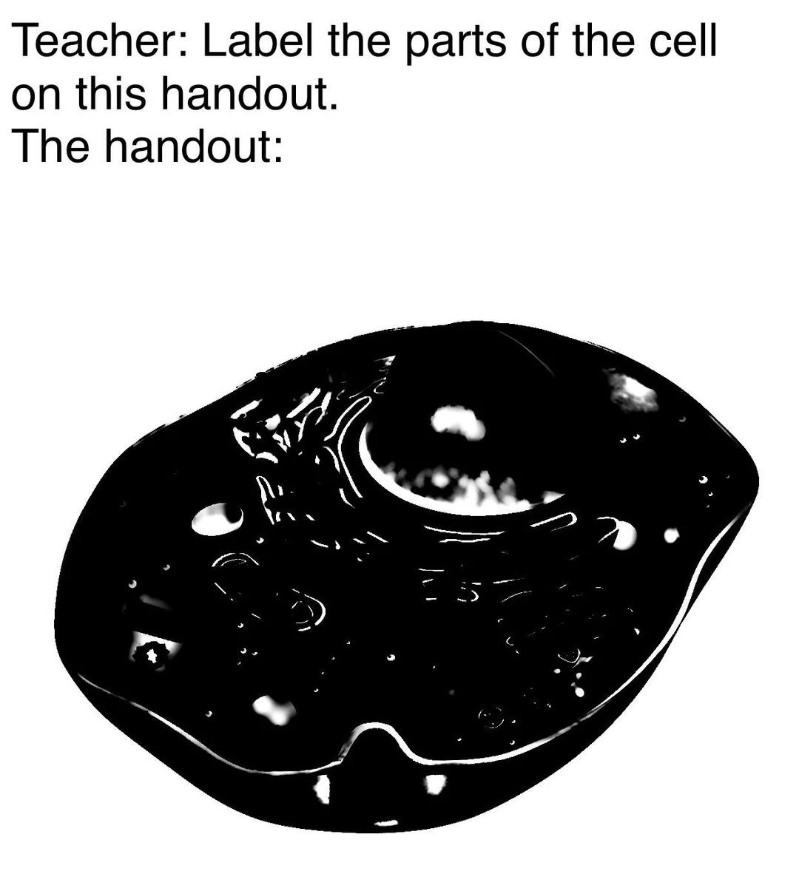
Consideration while Visualizing Data: Color Usage Cont.
- Rainbow colors are not color blind friendly
Show code
p1 <- ggplot(tibble(x = 1:10), aes(x, x)) +
geom_point(aes(fill = x), size = 5, shape = 21) +
theme(text = element_text(size = 12), axis.title = element_blank(), axis.text = element_blank(), axis.ticks = element_blank(), legend.position = c(.2, .8), legend.title = element_blank(), legend.background = element_rect(fill = NA))+
viridis::scale_fill_viridis(discrete = FALSE)
p2 <- colorblindr::cvd_grid(p1)
p1+p2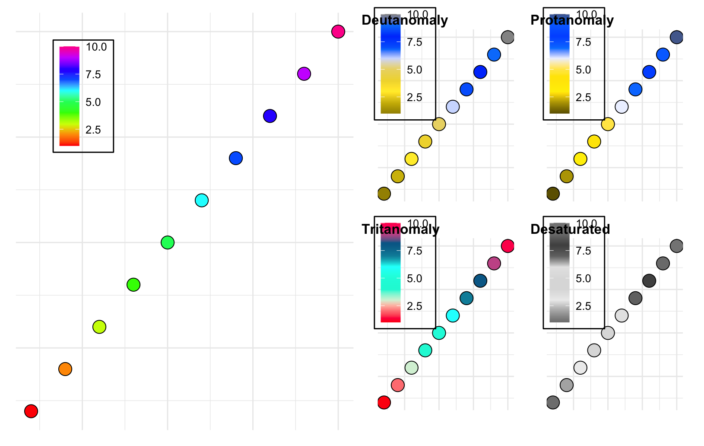
Consideration while Visualizing Data: Color Usage Cont.
- The viridis color scale is often the go to color scale for color consideration
Show code
p1 <- ggplot(tibble(x = 1:10), aes(x, x)) +
geom_point(aes(fill = x), size = 5, shape = 21) +
theme(text = element_text(size = 12), axis.title = element_blank(), axis.text = element_blank(), axis.ticks = element_blank(), legend.position = c(.2, .8), legend.title = element_blank(), legend.background = element_rect(fill = NA))+
viridis::scale_fill_viridis(discrete = FALSE)
p2 <- colorblindr::cvd_grid(p1)
p1+p2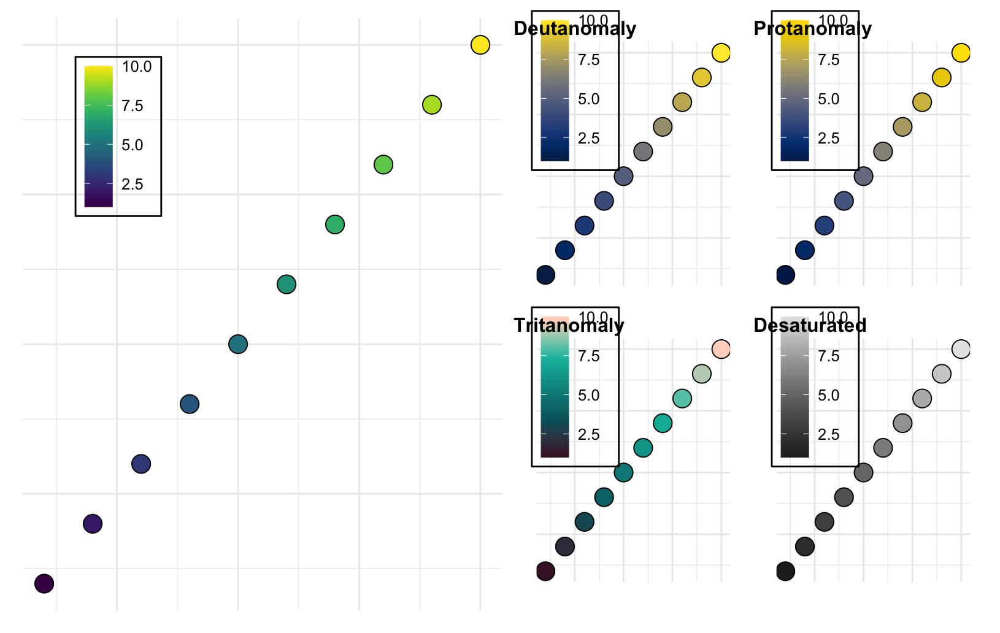
Plotting in R
Plotting in R
- There are two primary ways of making plots in R:
Base R
plot()is the native plotting function in R and does not require packagesggplot()is from theggplot2package and allows for layered and customizable plots
Plotting in R: plot() Cont.
plot()has two main argumentsx,y: the x and y arguments provide the x and y coordinates for the plot.
Plotting in R: plot() Cont.
plot()has two main argumentsx,y: the x and y arguments provide the x and y coordinates for the plot.
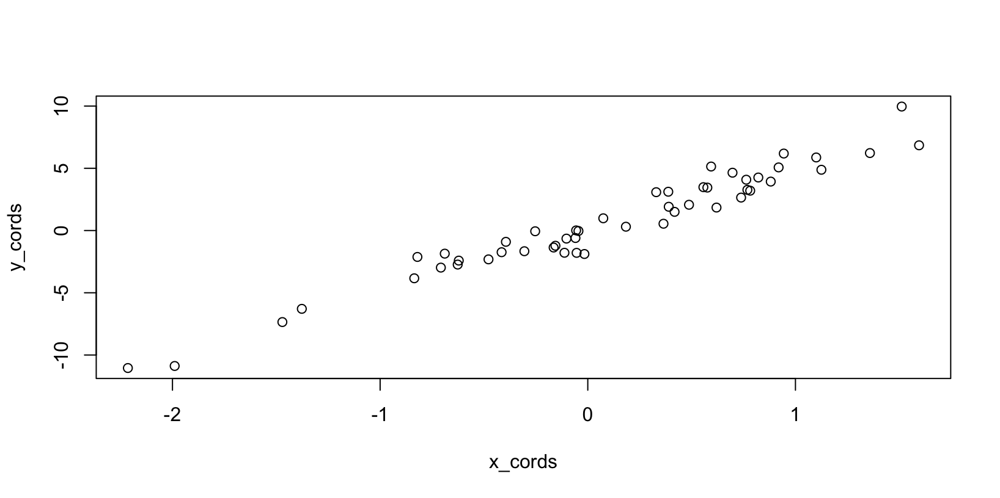
Plotting in R: plot() Cont.
plot()has two main argumentsx,y: the x and y arguments provide the x and y coordinates for the plot.- We can change: colors using
colargument
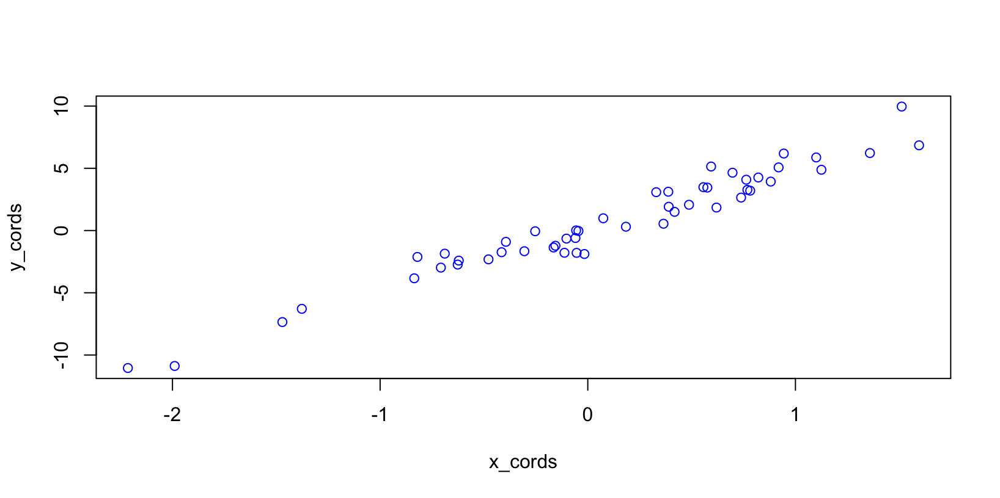
Plotting in R: plot() Cont.
plot()has two main argumentsx,y: the x and y arguments provide the x and y coordinates for the plot.- We can change: shapes using
pchargument
Plotting in R: plot() Cont.
plot()has two main argumentsx,y: the x and y arguments provide the x and y coordinates for the plot.- We can change: shapes using
pchargument
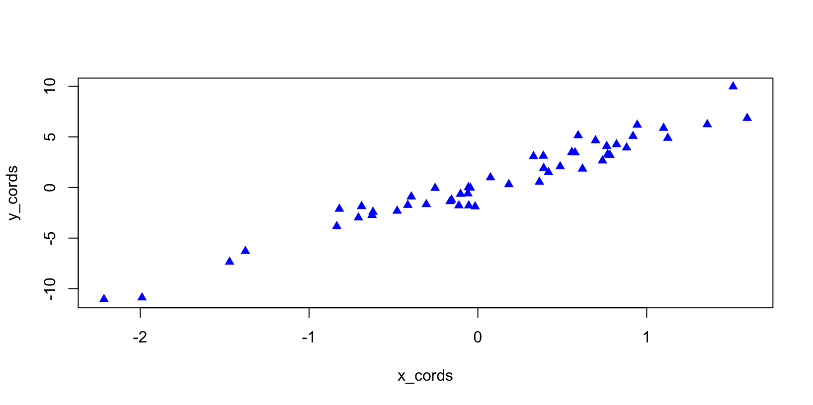
Plotting in R: plot() Cont.
plot()has two main argumentsx,y: the x and y arguments provide the x and y coordinates for the plot.- We can connect the points using:
lines()
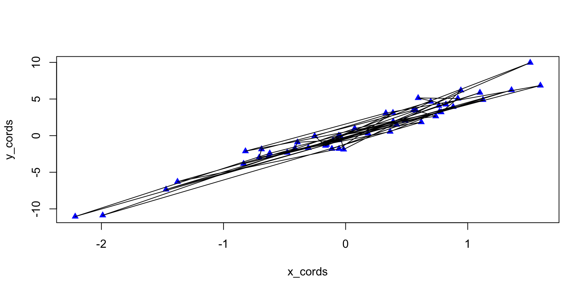
Plotting in R: plot() Cont.
plot()has two main argumentsx,y: the x and y arguments provide the x and y coordinates for the plot.- We can add a line using:
ablines(lm(y~x))
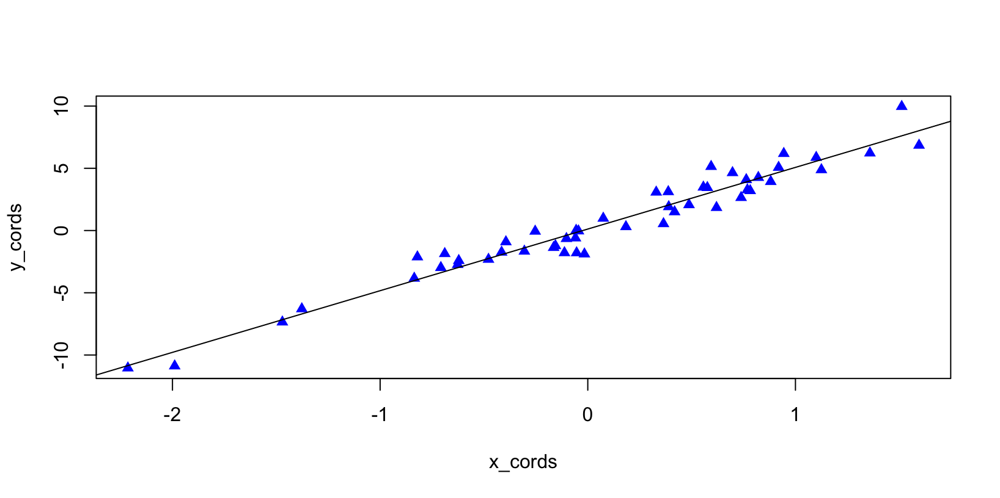
ggplot: Grammer of Graphics
In brief, the grammar [of graphics] tells us that a statistical graphic is a mapping from data to aesthetic attributes (colour, shape, size) of geometric objects (points, lines, bars). - Hadley Wickham
- Aesthetic: visual property of an object Think: color, size, transparency, etc.
- Aesthetic mapping: a relation between variables and visual elements \(aes:variables \longrightarrow aesthetics\)
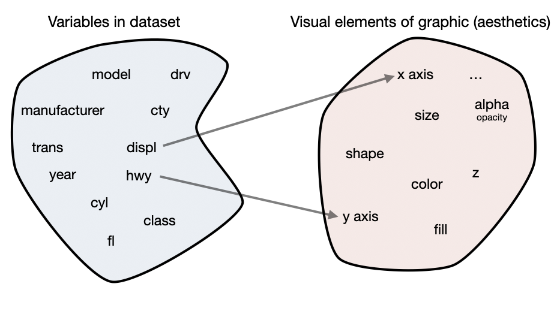
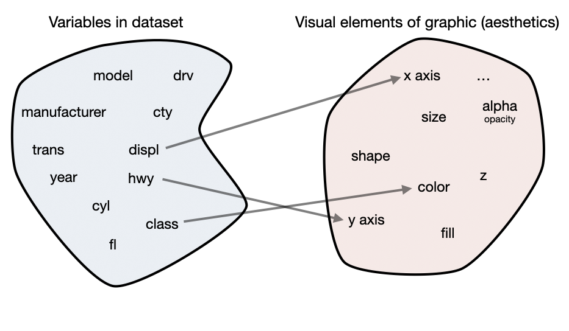
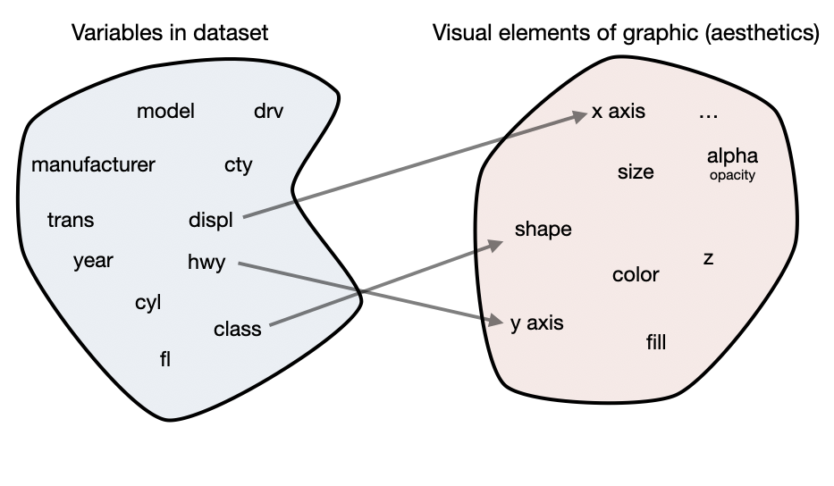
Plotting in R: ggplot()
ggplot()has 2 main argumentsdata, mappingdata: Default dataset to use for plot.
- First we create a
data.framefrom our variables
- Now we give our data frame as an argument and get …
A blank plot??
Plotting in R: ggplot() Cont.
ggplotis based off the grammar of graphics which expects a mapping usingaes()to connect variables to aesthetics like x and y.
- This give a plot with x and y axis, but no points?
Plotting in R: ggplot() Cont.
ggplotworks by adding layers usinggeom_functions.- For example, to add points we use
+ geom_point()
- For example, to add points we use
Plotting in R: ggplot() Cont.
- adding
geom_functions to our plots allows us to easily add other layers and our intention is clear
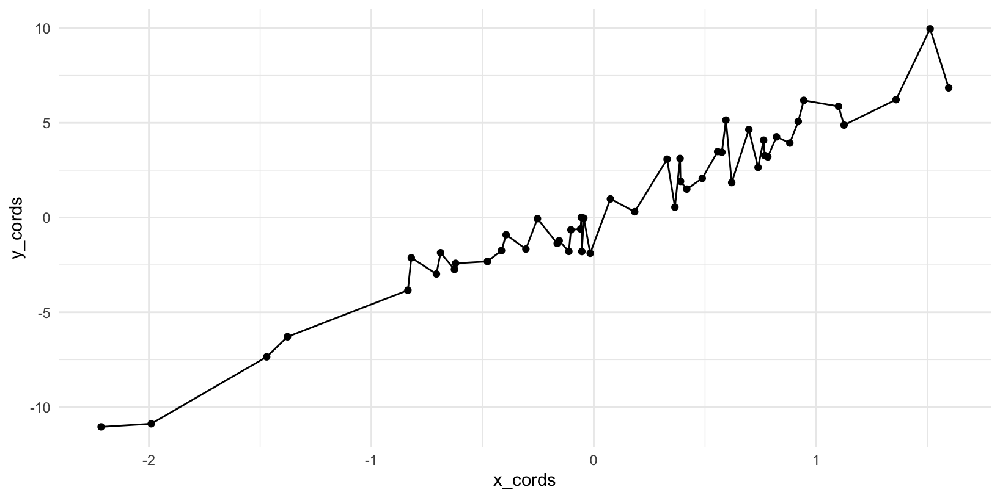
Plotting in R: ggplot() Cont.
- adding
geom_functions to our plots allows us to easily add other layers and our intention is clear
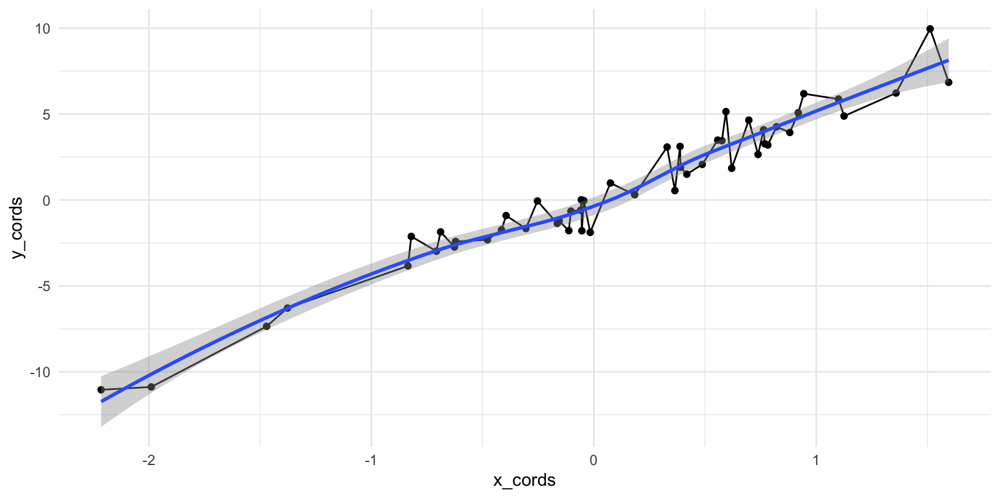
Plotting in R: ggplot() Cont.
- Typically the ggplot syntax is cleaner and you do not need to reference each argument
Plotting in R: ggplot() Cont.
- Typically the ggplot syntax is cleaner and you do not need to reference each argument
Plotting in R: ggplot() Cont.
- We can change: colors using
colorargument in the particular layer
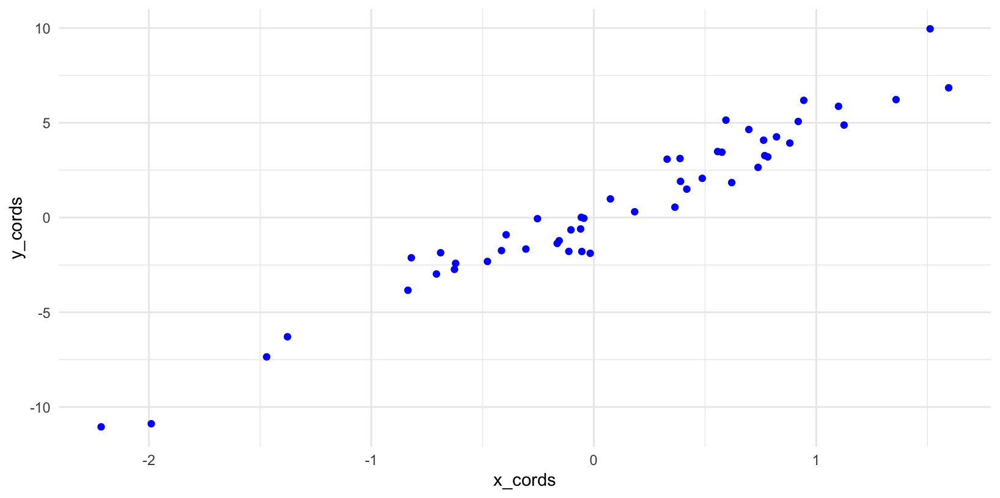
Plotting in R: ggplot() Cont.
- We can change: shape using
shapeargument in the particular layer
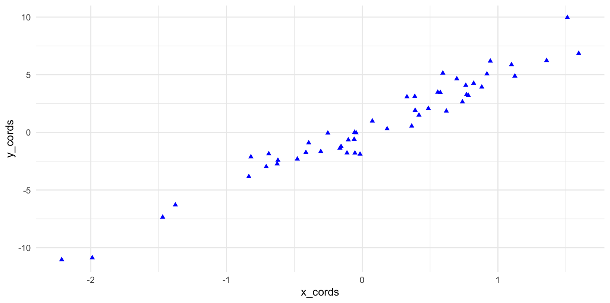
Plotting in R: ggplot() Cont.
- We can change: layers and add layers with additional changes
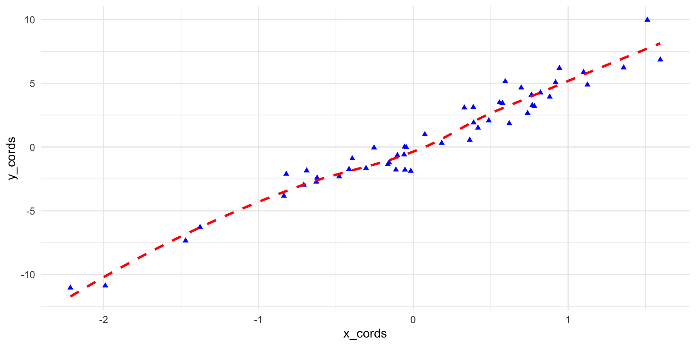
Plotting in R: ggplot() Cont.
- We can change: layer order. Now the points are on top of the line.
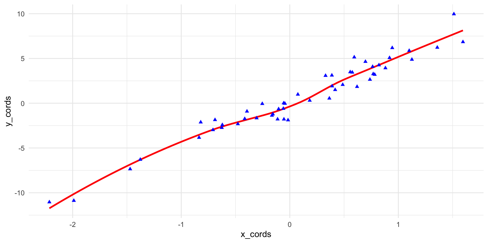
Plotting in R: ggplot() Cont.
- ggplot also allows for themes
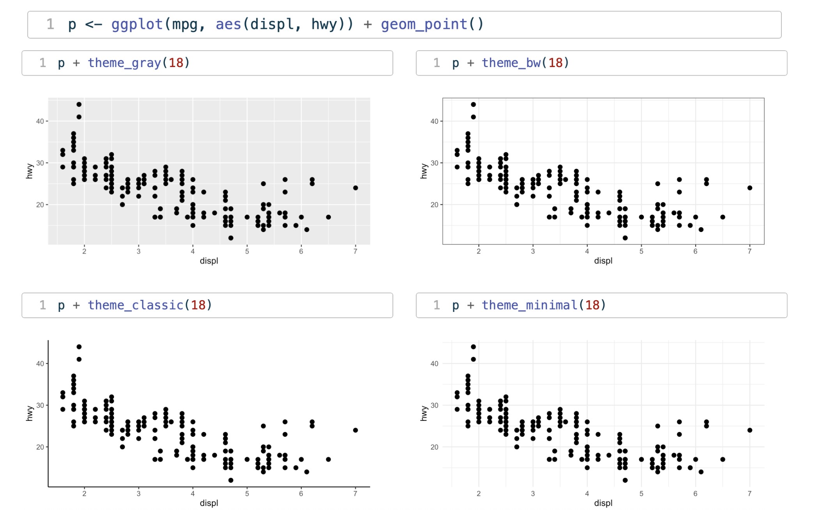
Plotting in R: ggplot() Cont.
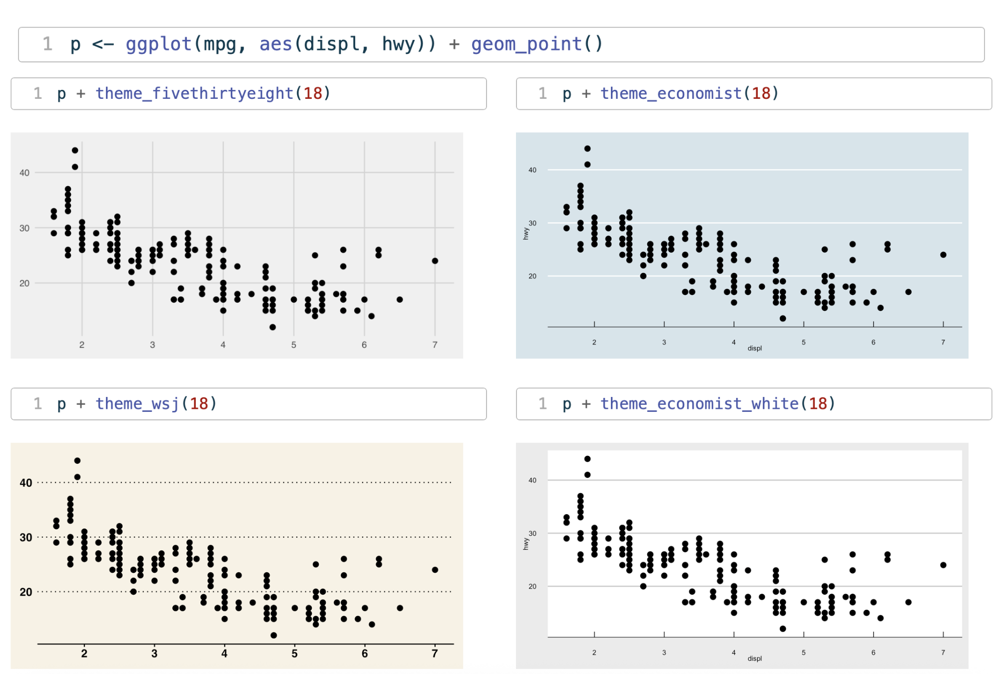
Plotting in R: plot() vs ggplot()
- While initially ggplot may seem more complicated it allows for:
- layering, faceting, and consistent aesthetics with minimal code
- quickly becomes more efficient than repeatedly customizing
plot()
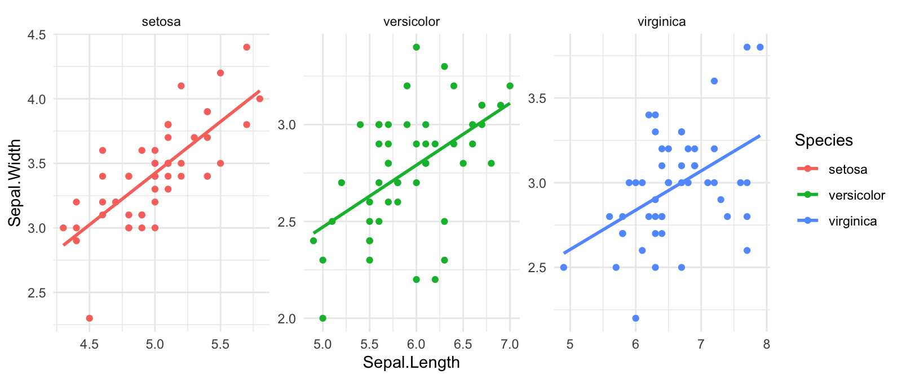
Show code
cols <- c("#F8766D", "#7CAE00", "#00BFC4")
par(mfrow = c(1, 3))
for (i in seq_along(levels(iris$Species))) {
sp <- levels(iris$Species)[i]
subdat <- subset(iris, Species == sp)
plot(
subdat$Sepal.Length,
subdat$Sepal.Width,
main = sp,
col = cols[i],
pch = 19
)
fit <- lm(Sepal.Width ~ Sepal.Length, data = subdat)
lines(subdat$Sepal.Length,
predict(fit),
col = cols[i],
lwd = 2)
}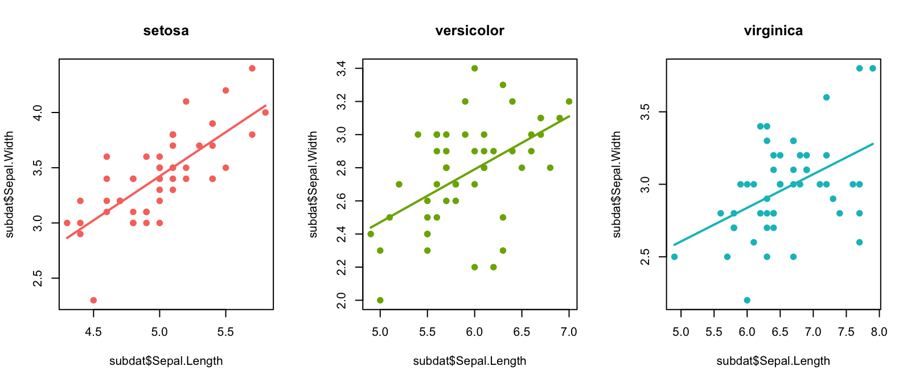
An Aside on Plotting in R
Tip
It is not expected you memorize coding for all possible plots. This is where you responsibly use AI or Google (even I do this a lot!). But you should understand the basics of plotting such as aesthetics and ect.
Graphics Cookbook
Graphics Cookbook Intro
- Each data type (discrete or continuous) and the number of variables (1, 2, 3, or more) will determine the basic plots needed to described your data
- This section will go over many of the essential plots and how to construct them in R
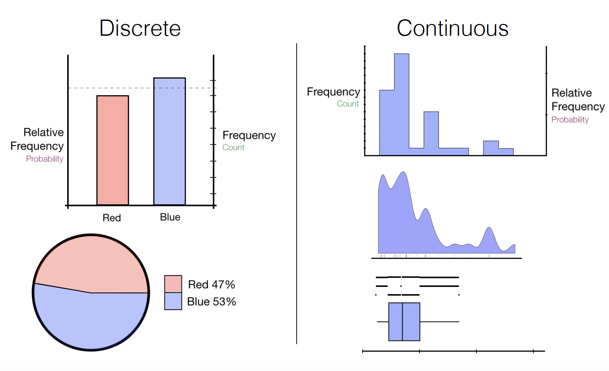
1 Discrete Variable: Bar Chart
- Bar Chart: If we have only one discrete variable X, we use a bar chart to plot the frequency/count of each category/discrete option.
1 Discrete Variable: Bar Chart Cont.
- Similarly, we can plot a bar chart using the proportion of each value instead of frequency
Data
| Observation | X |
|---|---|
| Observ 1 | 2 |
| Observ 2 | 4 |
| Observ 3 | 2 |
| Observ 4 | 1 |
| Observ 5 | 2 |
| Observ 6 | 4 |
1 Discrete Variable: Scatterplot and Overfitting
- We can also visualize a 1D discrete variable using a scatter plot by fixing the y-value in this case, we fix y = 0 for all observations


- However, since there is no y-value, this suffers from overplotting: Visual confusion in graphic caused by plotting too much data
1 Discrete Variable: Scatterplot and Overfitting Cont.
- One way to fix over plotting is to “jitter” the data. This refers to adding random noise to each observations to separate them for better visualization.
1 Discrete Variable: Scatterplot and Overfitting Cont.
- One way to fix over plotting is to “jitter” the data. This refers to adding random noise to each observations to separate them for better visualization.
1 Discrete Variable: Scatterplot and Overfitting Cont.
- One way to fix over plotting is to “jitter” the data. This refers to adding random noise to each observations to separate them for better visualization.
We can further reduce over plotting by using alpha blending: reducing the opacity of points to avoid cluttering
1 Discrete Variable: Scatterplot and Overfitting Cont.
- One way to fix over plotting is to “jitter” the data. This refers to adding random noise to each observations to separate them for better visualization.
We can further reduce over plotting by using alpha blending: reducing the opacity of points to avoid cluttering
1 Continuous Variable: Histogram and Distribution
- Histogram: If we have one variable X which is continuous, then we use a histogram to plot the distribution of X like a barchart, but now each bar represents a range of values
Ex: Suppose X has values from 1.5 to 4, and we want a histogram with 5 bars.
Data
| Observation | X |
|---|---|
| Observ 1 | 1.632754 |
| Observ 2 | 2.186062 |
| Observ 3 | 2.286427 |
| Observ 4 | 2.954104 |
| Observ 5 | 2.600841 |
| Observ 6 | 2.949195 |
| Observ 7 | 3.472338 |
| Observ 8 | 3.830399 |
| Observ 9 | 3.814557 |
1 Continuous Variable: Histogram and Distribution Cont.
Suppose we now have 100 observations, should we still use 5 bars?
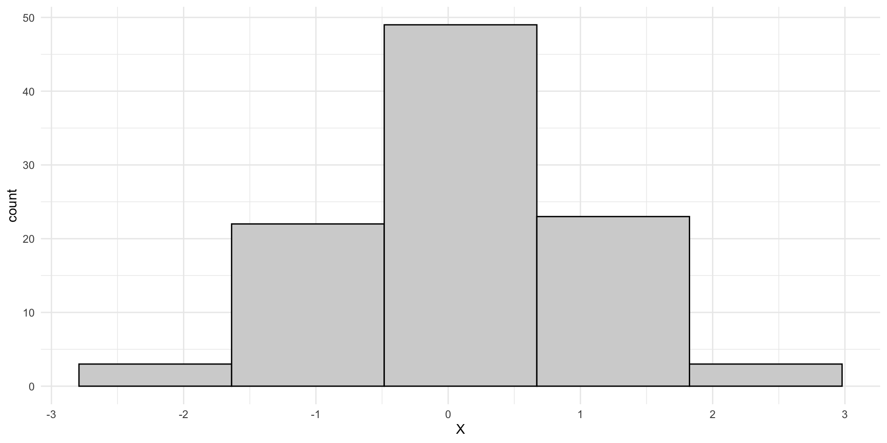
1 Continuous Variable: Histogram and Distribution Cont.
Suppose we now have 100 observations, should we still use 5 bars? Solution: No! It over simplifies the structure of the data. For histograms, the number of bars should be reasonable compared to the number of observations.
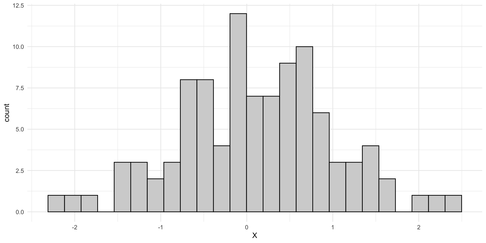
1 Continuous Variable: Histogram and Distribution Cont.
Suppose we now have 100 observations, should we still use 5 bars? Solution: No! It over simplifies the structure of the data. For histograms, the number of bars should be reasonable compared to the number of observations.

1 Continuous Variable: Histogram and Distribution Cont.
Suppose we now have 100 observations, should we still use 5 bars? Solution: No! It over simplifies the structure of the data. For histograms, the number of bars should be reasonable compared to the number of observations.
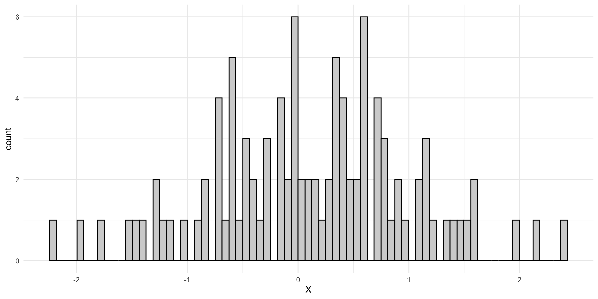
1 Continuous Variable: Histogram and Distribution Cont.
- Kernel Density Estimate: A smoothed out estimate of the shape of a histogram
1 Continuous Variable: Histogram and Distribution Cont.
- We can also do a histogram with density overlay for more information
1 Continuous Variable: Distribution Shapes
- Generally, most data might follow one of three shapes: Symmetric, Right Skewed, Left Skewed skewness refers to the data being skewed in one direction due to outliers
Mean \(\approx\) Median
Mean \(>\) Median
Mean \(<\) Median
1 Continuous Variable: Boxplot
- Boxplot: distribution plot of the data using quartiles
- Generally, any point plotted outside boxplot and lines is an outlier
1 Discrete/Continuous Variable and 1 Qualitative Variable
- Faceting - If we have one variable that is associated with a qualitative variable, we can plot any of the previous plots broken up by each quality/categorythis is referred to as faceting
Data
| X | Group |
|---|---|
| 6 | A |
| 3 | A |
| 2 | A |
| 4 | A |
| 9 | A |
| 3 | B |
| 3 | B |
| 1 | B |
| 6 | B |
| 2 | B |
Bar Chart Faceted
1 Discrete/Continuous Variable and 1 Qualitative Variable Cont.
- Faceting - If we have one variable that is associated with a qualitative variable, we can plot any of the previous plots broken up by each quality/categorythis is referred to as faceting
Histogram Faceted
1 Discrete/Continuous Variable and 1 Qualitative Variable Cont.
- Faceting - If we have one variable that is associated with a qualitative variable, we can plot any of the previous plots broken up by each quality/categorythis is referred to as faceting
Density Faceted
1 Discrete/Continuous Variable and 1 Qualitative Variable Cont.
- Faceting - If we have one variable that is associated with a qualitative variable, we can plot any of the previous plots broken up by each quality/categorythis is referred to as faceting
Boxplot Faceted
1 Discrete Variable and 1 Qualitative Variable
- To show specifics groups/categories, we can also color a barchart by each group
1 Continuous Variable and 1 Qualitative Variable
- Similarly, we can plot histograms by stacked colors, however, it is best to use density plots colored by each group/category
Show code
groups <- unique(my_data$Group)
cols <- c("red", "blue")
# Initialize empty plot with correct axes
plot(0, 0, type = "n",
xlim = range(my_data$X),
ylim = c(0, max(sapply(groups, function(g) max(density(my_data$X[my_data$Group == g])$y)))),
xlab = "X", ylab = "Density")
# Loop over groups
for (i in seq_along(groups)) {
g <- groups[i]
d <- density(my_data$X[my_data$Group == g])
lines(d, col = cols[i], lwd = 2)
}
legend("topright", legend = groups, col = cols, lwd = 2)1 Continuous Variable and 1 Qualitative Variable
- Or, we can plot boxplots colored by each group/category
1 Continuous Variable and 1 Qualitative Variable Cont.
- We can also use a jittered scatter plot to see how separated the groups are
More than 2 Variables
- R supports 3D graphics
Show code
impacts <- read_csv("impacts.csv")
library("plotly")
impacts |>
plot_ly(x = ~x, y = ~y, z = ~z,
marker = list(color = ~impact_prob,
colorscale= "Viridis",
reversescale = TRUE,
showscale = TRUE)) |>
add_markers() |>
layout(
annotations = list(
x = 1.13,
y = 1.05,
text = 'Probability',
xref = 'paper',
yref = 'paper',
showarrow = FALSE
)) |>
add_trace(
x = 0,
y = 0,
z = 0,
marker = list(
color = "orange",
size = 25
)) |>
add_trace(
x = -.15,
y = -.15,
z = 0,
marker = list(
color = "blue",
size = 10
))- However 3D graphics are difficult to display as statistic images
More than 2 Variables (Multivariate Data Plotting)
- When we have more than 2 continuous variables (multivariate data), it is best to visualize their summary statistics
- Look up the mean vector and covariance matrix
Mean Vector
More than 2 Variables (Multivariate Data Plotting) Cont.
- If our variables are on different scales, it is best “standardize” the data
- This is generally done if we are comparing mean vectors for multiple groups
- For example, if we consider the diamonds dataset without scaling, the graph tells us nothing
Show code
means_data <- diamonds |>
group_by(cut) |>
summarise(across(where(is.numeric), mean), .groups = "drop")
means_data |>
pivot_longer(-cut, names_to = "variable", values_to = "mean") |>
mutate("variable" = as_factor(variable)) |>
ggplot(aes(variable, mean, color = cut, group = cut))+
geom_line()+
geom_point()More than 2 Variables (Multivariate Data Plotting) Cont.
However, if we put all of the variables on the same scale, we get a more informative graph
Show code
means_data <- diamonds |>
mutate(across(where(is.numeric), function(x) (x - mean(x))/sd(x))) |>
group_by(cut) |>
summarise(across(where(is.numeric), mean), .groups = "drop")
means_data |>
pivot_longer(-cut, names_to = "variable", values_to = "mean") |>
mutate("variable" = as_factor(variable)) |>
ggplot(aes(variable, mean, color = cut, group = cut))+
geom_line()+
geom_point()| carat | cut | depth | table | price | x | y | z |
|---|---|---|---|---|---|---|---|
| -1.198157 | Ideal | -0.1740899 | -1.0996618 | -0.9040868 | -1.587823 | -1.536181 | -1.571115 |
| -1.240350 | Premium | -1.3607259 | 1.5855140 | -0.9040868 | -1.641310 | -1.658759 | -1.741159 |
| -1.198157 | Good | -3.3849872 | 3.3756312 | -0.9038361 | -1.498677 | -1.457382 | -1.741159 |
| -1.071577 | Premium | 0.4541292 | 0.2429261 | -0.9020815 | -1.364959 | -1.317293 | -1.287708 |
| -1.029384 | Good | 1.0823482 | 0.2429261 | -0.9018308 | -1.240155 | -1.212227 | -1.117663 |
| -1.177060 | Very Good | 0.7333376 | -0.2046032 | -0.9015802 | -1.596737 | -1.553692 | -1.500263 |
- We now see diamonds with a lower depth and table are have more ideal cuts
More than 2 Variables: Covariance Ellipsoids
- When we have more than 1 variable, we can plot an ellipsoid of the covariance matrix \(\boldsymbol{\Sigma}\)
- This will tell us the general direction and spread of the data
More than 2 Variables: Scatter plot Matrix
- A more intuitve way to plot the variability of multivariate data is with a scatter plot matrix
- This is essential plotting the correlation matrix
The End

Derik Boonstra, Ph.D.